Lab 2: ADC Sampling on the Curiosity Nano
Required Materials
- MPLAB X IDE and Compiler
- Curiosity Nano AVR64DD32 board
- USB to connect board to computer
- One jumper cable to connect AIN6 to the on-board 1.5V voltage source
Learning Objectives
- Using MCC Melody
- Viewing pin configurations
- Configuring and using the ADC
What is ADC?
Analog to digital converters, or ADCs for short, are used to transfer analog signals read from sensors into workable digital signals that we can use in code. Analog signals are continuous in nature, meaning that their values are not held to strict integer or fixed-point values, which is a necessity when dealing with computers. To solve this, ADCs utilize a break-point like system where values within certain ranges are rounded either up or down to fit as the nature of a digital signal. For example, if a sensor is reading 4.521…, and digitally we are only dealing in whole number integers, digitally it can be rounded to 5. While these breakpoints specifically vary part to part, the general concept will remain the same.
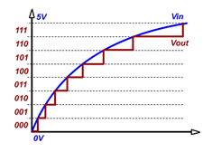
In addition to looking at the basic idea of an ADC, we will also be exploring the practical use cases, examining the sampling rate and the idea of oversampling in order to reduce random noise in our data collection. The short explanation of this concept is that the “noise” generated by the area around the parts will follow a normal distribution, allowing us to take the average value, increasing the accuracy of our reading and proving the use of over sampling.
The ADC in the Curiosity Nano has a sampling rate up to 130 ksps at 12-bit resolution. It is connected to an analog input multiplexer for selection between multiple single-ended or differential inputs. In single-ended conversions, the ADC measures the voltage between the selected input and 0V (GND). In differential conversions, the ADC measures the voltage between two selected input channels. The selected ADC input channels can either be internal (e.g., a voltage reference) or external analog input pins. In the next project, we will set up ADC to read input from a 1.5 V on-board voltage source using single-sampling, differential mode, and multi-sampling.
Setting up MPLAB X Project and Configuring ADC & I2C
- Copy and Rename Project
- Open the Project View and highlight mplab_lab1
- Right-click → Project → Copy. Rename the new project to mplab_lab2.
- Click copy
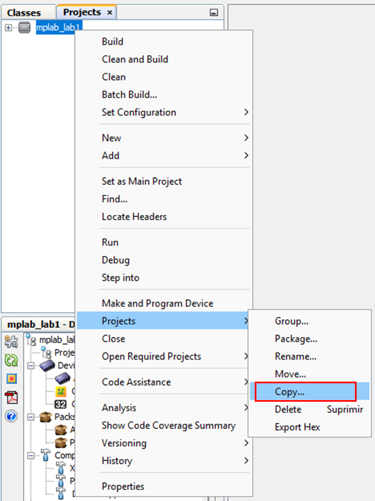
- Resolve Code Assistance Errors
- If red errors appear for certain types or functions that should be recognized:
- Right-click on mplab_lab2.
- Navigate to Code Assistance > Reparse Project.
- This resets internal indexing to recognize standard headers like stdio.h and util/delay.h.
- If red errors appear for certain types or functions that should be recognized:
- Add ADC Driver to MCC
- Open MCC
- Go to Resource Management -> Drivers
- Click the green + next to ADC
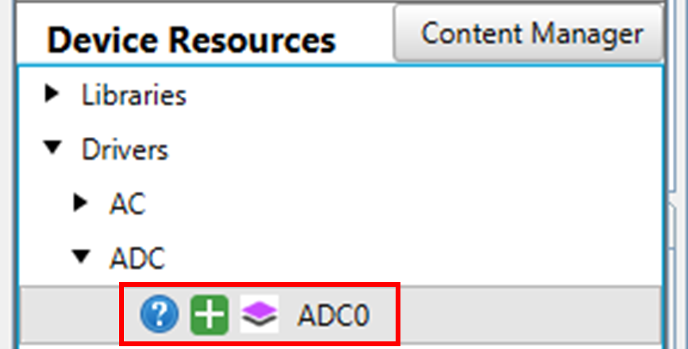
- Configure ADC Settings
- Keep default settings Single-Ended Mode and 12-bit resolution.
- The positive input channel defaults to AIN1, but this will be changed later via a function call.
- Computation mode remains unchanged for now (single sample, no multiple sampling).
- Clock Prescaler: Set to divide by 2 → results in a 12 MHz clock.
- Keep default settings, then Generate Code.
- VREF should now appear under Project Resources (not in the Application Builder diagram view).
- Double-click VREF to open its configuration settings.
- In the VREF tab, under Easy View, set VDD as Reference (board supply voltage is 3.3V).
- In the first program, we will sample voltages every 2 seconds.
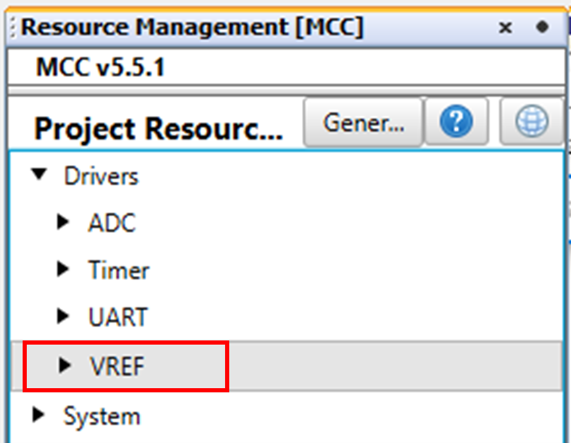
Code Walkthrough I: ADC Voltage Sampling with AIN6 and AIN7
- Overview
The first program in this lab is designed to interface with the board’s Analog-to-Digital Converter (ADC) and transmit single-sampled voltage readings over UART. The main objective is to periodically read ADC values from two analog input channels (AIN6 and AIN7) and send the data via UART for monitoring.
To achieve this, the program:
- Initializes the system using MCC-generated functions.
- Implements a software timer to control the ADC sampling rate.
- Reads ADC channels using MCC-generated functions.
- Uses UART communication to transmit the sampled data.
We will use the board’s 1.5V sample source and connect it to AIN6. The ADC reading from AIN6 will be compared to the reading from AIN7, which is internally wired to the potentiometer. As stated in the project setup, the ADC resolution is 12-bit and the reference voltage (Vref) is 3.3V, which matches the board’s supply voltage. The ADC converts an input voltage (Vin) into a digital value using the formula:
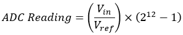
We will connect a jumper cable from AIN6 to VREF_P1V50B, as shown below. This ensures that AIN6 receives a 1.5V reference voltage. Additionally, remove the jumper cap located next to the ADC6 input, as indicated in the picture.
📌This lab can be found in Lab2/Code/mplab_lab2.X
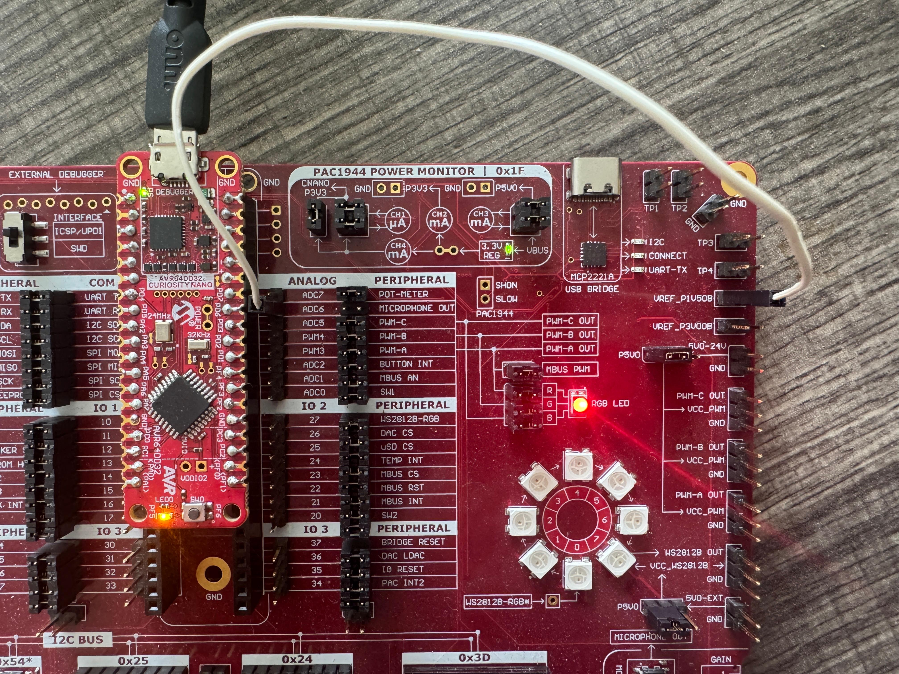
- Necessary Directives
The following directives are required for the program to function correctly:
#include "mcc_generated_files/system/system.h" #include <string.h> #include <stdio.h>- system.h – This import directive was covered in Lab 1. It includes our hardware-specific configuration header file.
- string.h – Enables string handling (e.g. strlen, sprintf)
- stdio.h - Required for formatted input/output operations, such as sprintf for constructing messages.
- Global Variables and Function Prototypes
To keep the code walkthrough organized, we categorize the global variables and
function prototypes into three main sections:
- UART Communication
Handles sending data via UART for debugging and monitoring
void UART_WriteString(const char *message); // enables UART communication char uart_str[80]; // provides a buffer for messages- UART_WriteString() - Sends a string message over UART, character by character.
- uart_str[80] - A character buffer used to store messages before sending them over UART.
- Timer Management
volatile uint32_t timer = 0UL; // This is unsigned long zero. void tcb_softtimer(void); // Timer interrupt callback. void clear_timer(void); // Resets timer. uint32_t read_timer(void); // Reads the current timer value.- timer - Sends a string message over UART, character by character.
- tcb_softtimer – Timer interrupt callback. Increments timer on every interrupt.
- clear_timer - Resets the timer variable.
- read_timer - Returns the current timer value safely.
- ADC Sampling
void sample_voltages(void); // Reads ADC values. int16_t adc_val; // Stores the last ADC reading.- sample_voltages - Reads ADC values periodically and sends them over UART.
- adc_val – Stores the last ADC reading.
- UART Communication
-
Initialization
The main function of the program begins by initializing system hardware with the function
SYSTEM_Initialize();. It is an MCC-generated function that initializes clock settings,
GPIOs, ADC, UART, and the Timer. It is defined in system.h
The next line registers tcb_softtimer() as a callback function for Timer0 interrupts, and the following one resets the software timer.int main(void) { SYSTEM_Initialize();
This line transmits a startup message over UART before initiating ADC sampling in sample_voltages().Timer0.TimeoutCallbackRegister(tcb_softtimer); clear_timer();UART_WriteString("MPLAB X - MCC lab3 - ADC\r\n"); while (1) { sample_voltages(); } } - Program Execution: Voltage Sampling Function
The sample_voltages() function is responsible for periodically reading ADC values from two
analog input channels (AIN6 and AIN7) and transmitting the results over UART. This function
ensures that ADC sampling occurs at defined intervals using a software timer.
void sample_voltages(void) { static unsigned adc_sample_count = 0; uint16_t chan7_cnt, chan6_cnt;- adc_sample_count - This static variable keeps track of the number of samples taken.
- chan7_cnt, chan6_cnt – These variables store the ADC readings from AIN6 and AIN7.
if(read_timer() > 2000lu) {- if(read_timer() > 2000lu) : This line calls read_timer() to check if 2000 timer ticks have elapsed
clear_timer();- clear_timer(): Every time the timer interval is reached, this line clears the timer to restart the timing interval.
adc_sample_count++;- adc_sample_count++ : This increments the counter that stores our total number of samples.
chan6_cnt = ADC0_ChannelSelectAndConvert(ADC_MUXPOS_AIN6_gc); chan7_cnt = ADC0_ChannelSelectAndConvert(ADC_MUXPOS_AIN7_gc);- ADC0_ChannelSelectAndConvert() : This is an MCC function that selects an ADC channel, initiates a conversion, and returns the sampled digital value. The conversion performed in this function is from an analog voltage to a digital ADC value.
sprintf(uart_str,"sample: %d chan 6 %d chan 7 %d\r\n", adc_sample_count, chan6_cnt, chan7_cnt);- sprintf() : This function formats an output string for UART transmission.
UART_WriteString(uart_str); } }- UART_WriteString() : This function sends the formatted ADC values over UART for monitoring.
- Program Execution: Timer Functions
Although our timer function were covered in the previous lab, let's take a moment to review them.
void tcb_softtimer(void) { cli(); // Disable interrupts timer++; // Increment software timer sei(); // Re-enable interrupts } void clear_timer(void) { cli(); // Disable interrupts timer = 0; // Reset timer sei(); // Re-enable interrupts } uint32_t read_timer(void) { uint32_t timer_val; cli(); // Disable interrupts timer_val = timer; // Read the timer value sei(); // Re-enable interrupts return timer_val; } - Program Execution: UART_WriteString()
While the UART_WriteString function was covered in a previous lab, let's review it again.
void UART_WriteString(const char *message) { static uint16_t spinlock = 0; for (int i = 0; i < (int) strlen(message); i++) { while (!(UART.IsTxReady())) spinlock++; UART.Write(message[i]); } } - Expected Result Just like in Lab 1, save all changes to your project and click the Build for Debugging Main Project button 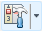 on the toolbar to build the project. Then, click on the Make and Program Device Main Project button to send the program to the board. Navigate to Window ➡ Debugging ➡ Data Visualizer. Use the Data Visualizer to read the UART output. This is what you should see. 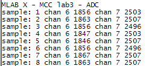 Channel 6 reads a range of values from 1846 to 1867, which includes some noise, but gets very close to the expected result. 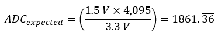 If you are observant and move the potentiometer, Channel 7 will display a range of values from 0 to 4095.
- Visualizing Channel 6 📌The ADC Visualizer program can be found in Lab2/Code/ADCVisualizer.exe To use the ADC Visualizer, connect your board with the program already loaded, set the port and baud rate using the options dropdown, then click Start. After collecting 500 samples, we observe that the channel 1 (AIN6) readings range from a minimum of 1857 to a maximum of 1872, with an average value of 1863. 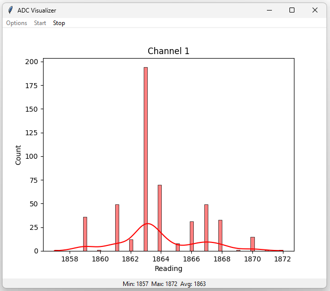
Code Walkthrough II: Differential ADC Voltage Sampling with AIN6 and AIN7
- Overview
In the second section of this lab, sample_voltages() enhances the previous ADC sampling by introducing
differential voltage measurement. This function is almost identical to the previous one up until
the point where ADC values are read. However, we introduce a new variable, chan76_cnt, to store the
result of the differential measurement between AIN6 and AIN7.
void sample_voltages(void) { static unsigned adc_sample_count = 0; uint16_t chan7_cnt,chan6_cnt, chan76_cnt; // This one if(read_timer() > 2000lu) { clear_timer(); adc_sample_count++; chan6_cnt = ADC0_ChannelSelectAndConvert(ADC_MUXPOS_AIN6_gc); chan7_cnt = ADC0_ChannelSelectAndConvert(ADC_MUXPOS_AIN7_gc); - Differential Mode Configuration and Starting the Conversion
The following three lines configure the ADC to read the differential voltage between the two channels.
ADC0.CTRLA |= ADC_CONVMODE_DIFF_gc; // Set ADC to // differential mode ADC0.MUXPOS = ADC_MUXPOS_AIN7_gc; // Set positive // input channel ADC0.MUXNEG = ADC_MUXPOS_AIN6_gc; // Set negative // to AIN6 ADC0.COMMAND |= ADC_STCONV_bm; // Start conversion- ADC0.CTRLA - Control Register A allows you to configure differential mode to measure the difference between two input voltages, MUXPOS and MUXNEG.
- ADC0.MUXPOS – MUXPOS selects the positive input channel.
- ADC0.MUXNEG – MUXNEG selects the negative input channel.
- ADC0.COMMAND - This command starts the differential conversion.
- Waiting for Completion
The function waits for the conversion to complete by checking the ADC interrupt flag.
while (!(ADC0.INTFLAGS & 0x01)); // Check ADC interrupt flag // by isolating the LSB. - Reading the Differential Result
After the conversion, the result is read directly from the ADC result register.
chan76_cnt = ADC0.RES; // Read differential result - Printing Results
The function formats and sends the results over UART, including the individual values of AIN6 and AIN7, as well as the differential result.
sprintf(uart_str,"sample: %d chan 6 %d chan 7 %d diff %d\r\n", adc_sample_count, chan6_cnt, chan7_cnt, chan76_cnt); UART_WriteString(uart_str); - Restoring ADC Configuration
After the measurement, differential mode is disabled to return to standard ADC operation.
ADC0.CTRLA &= ~(ADC_CONVMODE_DIFF_gc); } } - Expected Results This is what you should see after building, loading the program onto your board, and opening the Data Visualizer. 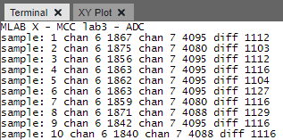 Chan 6 values (AIN6) consistently range from approximately 1840 to 1875. Chan 7 values (AIN7) hover around 4080 to 4095, which is near the maximum ADC value because my potentiometer was maxed. The differential voltage (diff) varies between 1103 and 1129 in the positive range, which is the difference between AIN7 (positive) and AIN6 (negative).
Code Walkthrough III: Multi-Sampling ADC for Noise Reduction and Increased Accuracy
- Overview This third version of the program enhances ADC voltage measurement by implementing multi-sampling. Instead of taking a single ADC reading per channel, the system accumulates multiple readings and averages them out to improve accuracy and reduce noise.
- Main Function
To begin, please replace the function call to sample_voltages() in the main
function with a call to a new function multi_sample_voltages(). We will
define this new function in the following steps.
while (1) { multi_sample_voltages(); } - Setting Sample Count in ADC
Before defining the function multi_sample_voltages(), we need to define a helper function
to configure the ADC’s hardware accumulation settings. This allows the ADC to automatically
take multiple samples and sum them before storing the result. To support this, we define a
lookup array samplenum_index[8], which maps valid user-defined sample counts to their
corresponding values required by the ADC0.CTRLB register.
uint8_t samplenum_index[8] = { {1,2,4,8,16,32,64,128} } uint8_t ADC0_setsamplenum(uint8_t sample_count) { uint8_t scan_index, ctrlb_val, flag = 0xFF;- scan_index - Used as a loop index to iterate through the array table and find the corresponding sample count value.
- ctrlb_val - Stores the correct value to be written to the ADC0.CTRLB register based on the matched sample count.
- flag – Indicates whether the lookup was successful (true) or not (false). Returned by the function to signal success or failure.
This if branch checks whether the user provided a valid sample_count. If not, it defaults to a single-sample setting (0x00) and sets the flag to indicate failure.for (scan_index = 0; scan_index < 8; scan_index++) { if(samplenum_index[scan_index] == sample_count) ctrlb_val = scan_index; }
The function writes the control value to the CTRLB register, configuring the ADC's accumulation mode internally.if (ctrb_val == 0xFF) { ctrb_val = 0x00; flag = false; } else { flag = true; }
The function returns the status indicating success or failure, based on whether the provided sample count was valid.ADC0.CTRLB = ctrlb_val;return(flag); } - Using Hardware Accumulation to Collect Multiple Samples
This function reads ADC values from two input pins (AIN6 and AIN7), using hardware accumulation
to collect multiple samples and averages them. It configures ADC, collects samples, processes
them, and outputs the results to UART. Before we define the function, we need to define a
constant to hold the user-defined number of samples. In this example, we will choose 32 samples.
Then, we start defining the function with static variables to store results and keep track of
the sample count:
Before taking new samples, we ensure that 1.5 s have passed since the last read using the timer. If more than 1,500 timer ticks have passed, we clear the timer and increment adc_sample_count to keep track of the number of sample sets. The number 1500lu is a 16-bit unsigned integer value in milliseconds.#define SAMPLE_NUM 32 void multi_sample_voltages(void){ static uint16_t adc_sample_count = 0; // Keep track of the count. static uint16_t ch6_raw, ch7_raw = 0; // Store results.
The following condition attempts to accumulate a specified number of samples by calling ADC0_setsamplenum(SAMPLE_NUM). If the function returns true, it means the configuration is valid, and we proceed with sampling.if(read_timer() > 1500lu) { clear_timer(); adc_sample_count++;
We now configure the ADC to read from channel 6 (AIN6). The ADC conversion is started. After it is complete, the result is read into ch6_raw and averaged by dividing by SAMPLE_NUM.if(ADC0_setsamplenum(SAMPLE_NUM)) {
When accumulating more than 16 samples, the result may exceed the capacity of the 16-bit result register. To prevent overflow, the least significant bits (LSBs) of the result are truncated to ensure it fits within the available register size, as described below:ADC0_ChannelSelect(ADC_MUXPOS_AIN6_gc);// Select channel 6 ADC0_ConversionStart(); // Start conversion while(!ADC0_IsConversionDone()); // Wait for completion ch6_raw = ADC0.RES; // Read result ch6_raw /= (uint16_t)(SAMPLE_NUM); // Calculate average- For 32 samples: The last bit is truncated, making the accumulated result half as large.
- For 64 samples: The last 2 bits are truncated, causing the result to be four times smaller.
- For 128 samples: The last 8 bits are truncated, resulting in the result being eight times smaller.
1111111111110000 (a 16-bit number) giving a value of 131,040 / 2 = 65,520. To correct for this truncation, we apply a manual multiplication by 2 to restore the original value. The correction is applied for each number of samples as follows:
Similarly, we configure the ADC to read from channel 7 (AIN7), start the conversion, wait for it to complete, average the result by the number of samples, and correct for truncation:if(SAMPLE_NUM == 32) // Correct for truncation ch6_raw *= 2; if(SAMPLE_NUM == 64) ch6_raw *= 4; if(SAMPLE_NUM == 128) ch6_raw *= 8;ADC0_ChannelSelect(ADC_MUXPOS_AIN6_gc);// Select channel 7 ADC0_ConversionStart(); // Start conversion while(!ADC0_IsConversionDone()); // Wait for completion ch7_raw = ADC0.RES; // Read result ch7_raw /= (uint16_t)(SAMPLE_NUM); // Calculate average if(SAMPLE_NUM == 32) // Correct for truncation ch7_raw *= 2; if(SAMPLE_NUM == 64) ch7_raw *= 4; if(SAMPLE_NUM == 128) ch7_raw *= 8; - Printing Results
The results of the sampling are printed to UART. This includes the current sample count
and the results of channels 6 and 7:
sprintf(uart_str,"sample %04u accumulated samples %d\r\n", adc_sample_count, SAMPLE_NUM); UART_WriteString(uart_str); sprintf(uart_str,"chan 6 %04u chan 7 %04u \r\n", ch6_raw, ch7_raw); UART_WriteString(uart_str); } - Error Handling
If the ADC0_setsamplenum(SAMPLE_NUM) function returns false, indicating an invalid sample count,
we output an error message to the UART:
else { sprintf(uart_str,"invalid number of samples specified"); UART_WriteString(uart_str); } } } - Expected Results After building, loading the program onto your board, and opening the Data Visualizer, you should see more stability in your results. This is an example of the program’s output with an accumulation of 32 samples. As you increase the number of samples, what should happen? 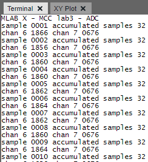
- Visualizing Channel 6 Running the new program in ADC Visualizer, we see a drastically smaller range of readings than without using oversampling: 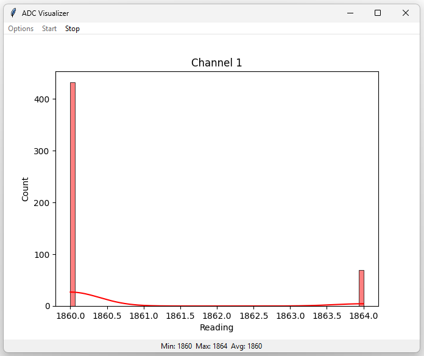 Running the new oversampling program in the ADC Visualizer with 500 samples, we observe a significantly smaller range of readings compared to the non-oversampled results. In fact, the program returned a consistent value of 1860 for nearly 450 of the samples. The remaining readings were 1864, making up only about 10% of the total. This demonstrates how oversampling effectively reduces noise and provides more stable and reliable measurements.